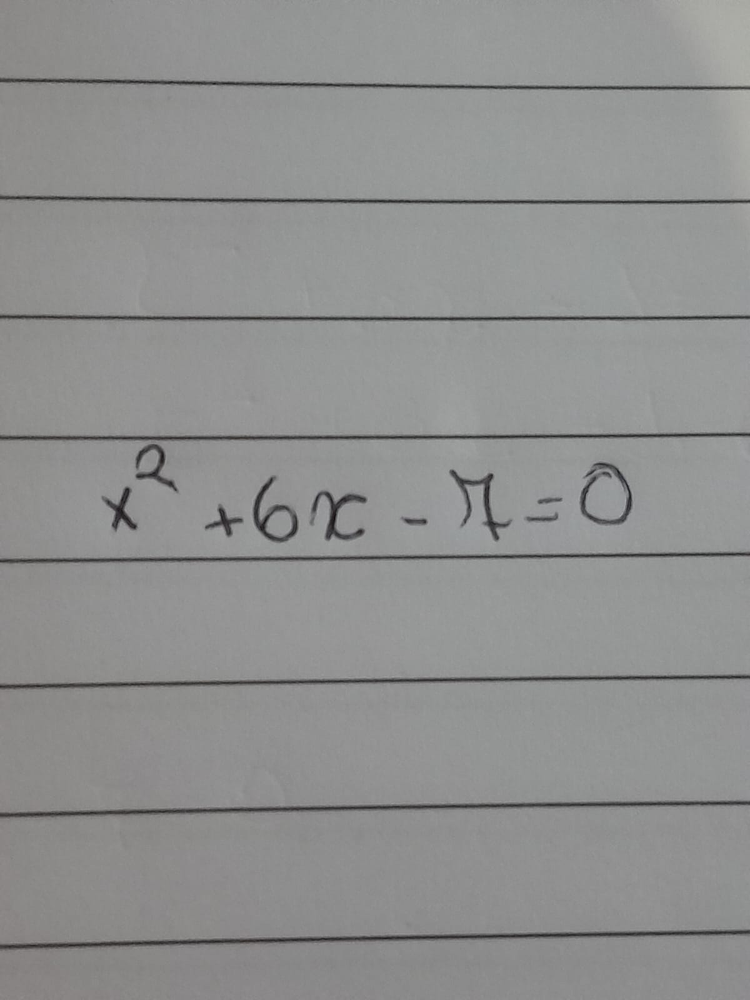

3º Trimeste
Funções Modulares
Definição:Chama-se módulo ou valor absoluto de x, representa-se por |x|, o número real não negativo
- O módulo de um número real não negativo é igual ao próprio número;
- O módulo de um número real negativo é igual ao oposto desse número;
- o módulo de um número real qualquer é sempre maior ou igual a zero;
Gráficos
- Construir o gráfico da função f(x)=x, mas considerar somente x>=0;
- Construir o grafico da função f(x)=-x, mas considerar somente x<0;
- Reunir os dois gráficos;
Exercícios
Resolva as Equações
a) |ùë• − 6| = 10
|3ùë• − 1| = 5
|ùë•2 + 6ùë• − 1| = 6
Exercícios de Gráficos
|ùë•2 + 6ùë• − 1| = 6
- Dividir o problema em dois casos: positivo e negativo
- Resolva a equação x^2 + 6x - 1 = 6
- Simplifique
- Use o método de soma e produto
- fatore
- expandida usando o produto da diferença:
- Atribua a expressão a zero para encontrar as raízes da equação: 
- Use a equação quadrática para resolver a equação:
- Gráfico
ùëì(ùë•) = |ùë•| − 3
Exercícios retirados do material da professora;
- A|x - 6| = 10
- B|3x - 1| = 5
- C |x^2 + 6x - 1| = 6
- D|x^2 - 5x| = 6
- E |2x - 1| = |4x + 3|
Resultadox=16 e x=4
Resultadox = 2 e x = 4/3.
Resultado x = -7 e x = 1 ou x = -1 e x = -5.
Resultadox = -1 e x = 6 ou x = 2 e x = 3.
A equação |2x - 1| = |4x + 3| significa que 2x - 1 e 4x + 3 podem ter o mesmo valor positivo ou o mesmo valor negativo:89